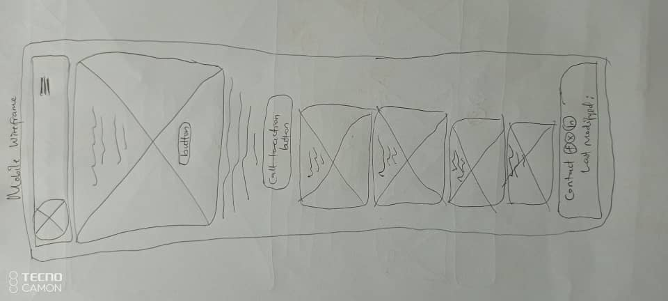
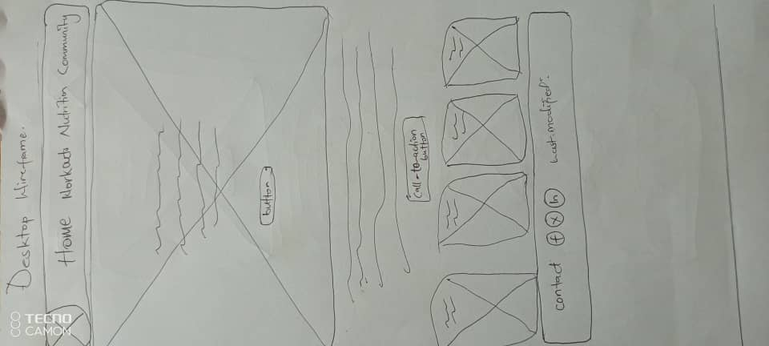

Site Name
Bay Area eBiking Club
Reason for choosing the site name: This name represents a club that focuses on electric biking in the Uganda Bay Area, making it easily recognizable and relevant to the target audience of bikers and enthusiasts in this region.
Optional Domain Availability: bay-ebike.org
Site Purpose
The site serves as a hub for the Bay Area eBiking community, providing information on local e-bike trails, bike recommendations, and a membership form for interested individuals to join the club.
Scenarios
- What is the best e-bike to get for mountainous terrain?
- Where can I find contact information for the club's directors?
Color Schema
Selected Color 1: #2e8b57 (Green)
This color will be used for headings and accents, such as buttons or important links.
Selected Color 2: #f0f0f0 (Light Gray)
This color will be used as the background color for the page to create a clean and modern look.
Typography
Font 1: 'Arial' for all body text, as it is clear and easy to read on screens.
Font 2: 'Georgia' for headings, giving them a more traditional and distinguished look.
Wireframe
Mobile View: Simple layout with navigation bar at the top, hero image or main text content underneath.
Desktop View: Same layout but with more space for side-by-side content like image and text blocks.
 Testing
Evaluation against best practices (validation, accessibility, SEO, etc.).